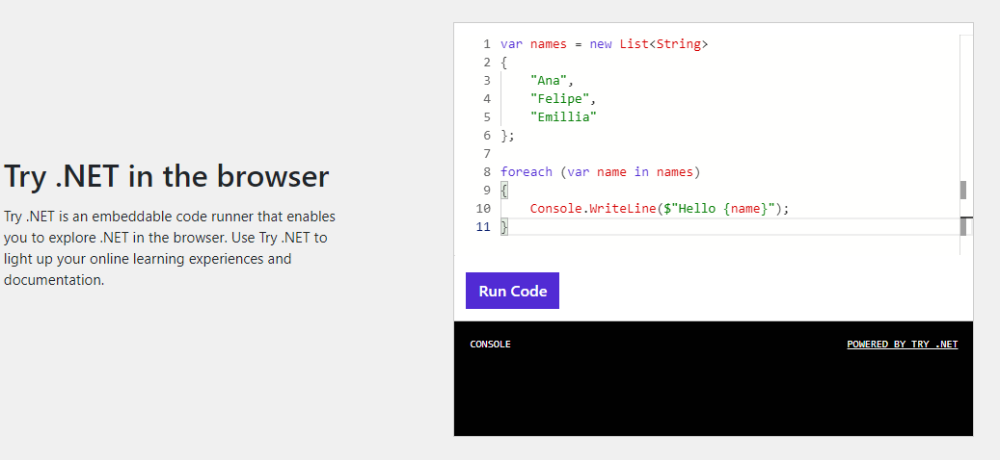
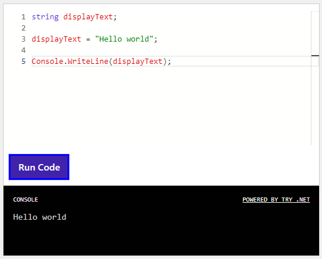
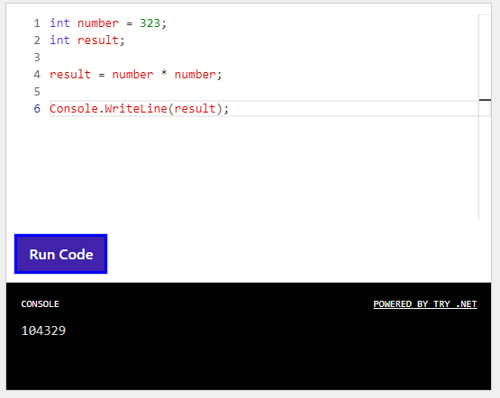
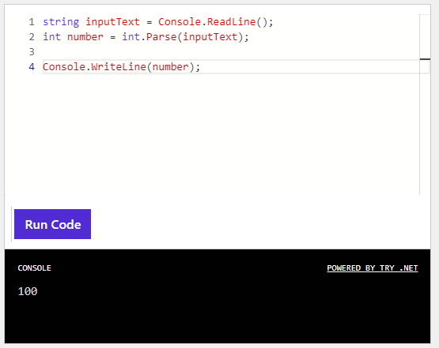

ブラウザ上で動作するC#コーディング環境で、まずは簡単にプログラムに触れてみましょう。
コードをTry DOTNETのTry .NET in the browserに貼りつけることで、実行結果を確認できます。

変数とは、数値や文字列、その他データを入れておくための入れ物です。
変数には「型」と「名前」が存在し、変数を作る時にそれぞれを指定します。
string displayText;
上記のコード中の「string」は、変数の型を指定するもので、文字列型であることを意味しています。
「displayText」は変数の名前です。この変数の宣言の後、変数を実際に使う時にこの名前を使用します。
「;」は行末を意味し、変数宣言はここまでであることを意味します。
試しに、Try.NETに下記のコードを入力し、「Run Code」ボタンをクリックしてみましょう。
string displayText;
displayText = "Hello world";
Console.WriteLine(displayText);

consoleの表示が上記画像のようになれば成功です。
displayText = "Hello world";
上記の行では、変数「displayText」に、「Hello world」という文字列を代入し、変数の中身を変更しています。
代入は「=」演算子で行い、必ず左辺の変数に対して右辺の内容を代入します。
結果、下記の行でconsoleに出力される内容が代入した文字列と同じものになります。
Console.WriteLine(displayText);
Console.WriteLine(出力する内容); は、consoleに括弧の中の内容を出力する指示です。
括弧の中には、変数や文字列そのものを指定することができます。
プログラミングの用途には、数学的計算を伴うものが多くあります。
加減乗除等の基本的な計算については、+ - * / 等の一般的な計算演算子を用いて指示を出すことができます。
// 変数は宣言と同時に代入することもできます
// これを初期化と呼びます
int number = 323;
int result;
result = number * number;
Console.WriteLine(result);
Try.NETに上記のコードを入力し、「Run Code」ボタンをクリックしてみましょう。

323に323を掛け算した結果が表示されているはずです。
result = number * number;
上記の行では変数resultに、変数numberの内容「323」自身を掛け算した結果を代入しています。
「*」を「+」「-」「/」に変えた場合、結果がどうなるかも試してみてください。
変数には入れられるデータの種類を表す「型」がありますが、その「型」を別の種類に変換する操作を行いたい場合があります。
下記の例では、int.Parse()により、string型で数字が書かれた文字列を数値型に変換しています。
string inputText = Console.ReadLine();
int number = int.Parse(inputText);
Console.WriteLine(number);
上記コードを実行して、入力を求めるダイアログには数値を入れてみましょう。
入力を求めるダイアログが何度も開いて閉じない場合、ESCキーを押します。

プログラムコード中にコメントを書くことで、処理内容が人にわかりやすくなります。
また、一時的に動作させたくないコードをコメントにすることで、すぐに戻せるようにコードを除外できるようになります。
string displayText;
// 表示する文字列を代入します
displayText = "Hello world";
// コメントになっていればコードは動作しません
// displayText = "this is comment";
// 文字列をコンソールに表示します
Console.WriteLine(displayText);
/*
複数行に渡り、
コメントを書く事もできます。
その場合はこのようなコメントの囲み方をします。
*/
関数・メソッドとは、処理のまとまりごとに部品化して必要な時に使う仕組みのことです。
今までに登場していたConsole.WriteLine()やint.Parse()も、C#があらかじめ用意してくれていた関数・メソッドを使っていたことになります。
この関数・メソッドは自分で作って利用することもできるため、繰り返し使う処理はメソッドにしておくと便利です。
// 関数・メソッドを呼び出す
int number = power(323);
// 結果を表示
Console.WriteLine(number);
// 関数定義。
// 関数の定義は、実際に利用する行より下に書いても良い
// int num はパラメータ。関数の中で計算したい値を呼び出し元から受け取る
int power(int num){
int result = num * num;
return(result);
}